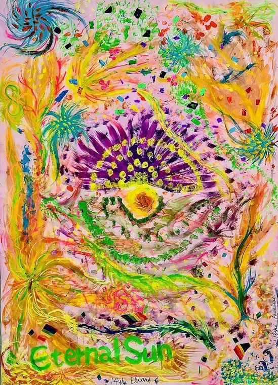

ORIGINAL HAND-PAINTED ART
Eternal Sun
Bring light into the everyday.
The original painting at the heart of an unfolding world by Aurelia & Elion.
Discover Eternal Sun13th Aurelia × 14th Elion

THE ARTWORKS
Colour in motion.
An unfolding world of nature, emotion and spontaneous creation.
Enter the galleryDIGITAL COLLECTIONS
Art, in your everyday.
Digital editions and evolving art series, each with its own place in the AE universe.
Discover the collectionsAE UNIVERSE CREATION
Original art. A world to feel.
We begin with hand-painted art. Colour, gesture and imagination open into scent, objects and everyday experiences.
IN DEVELOPMENT
Eternal Summer
Our first fragrance and the art book 盛明 are taking shape together: one invites you into the world; the other brings it closer.
Discover what is taking shape13TH AURELIA × 14TH ELION
In Love, We Create.
The hand moves first. The work reveals itself.
Our story